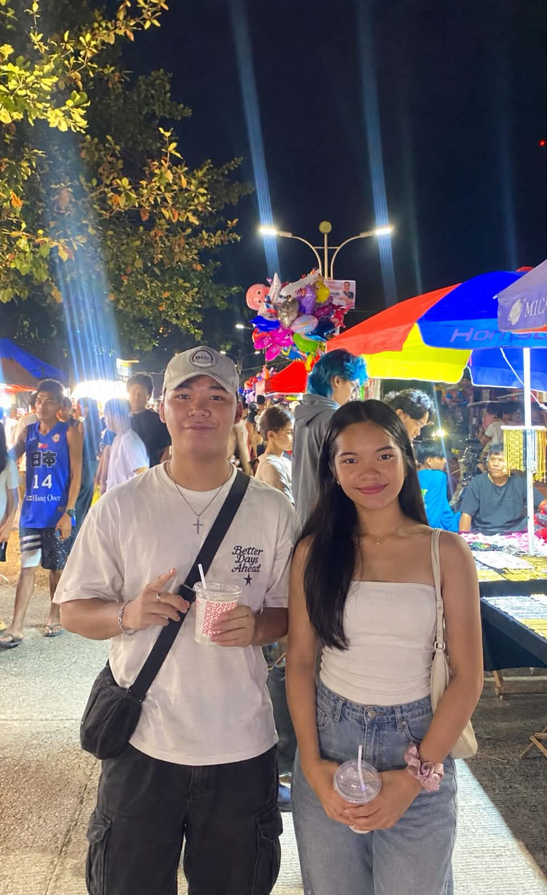

♡ My Photo

Welcome to my little corner of the internet.
Hello! My name is Mildred M. Colo. I am a funny, observant, independent, and hardworking person. I easily get along with others as long as they are genuine. I also tend to notice even the smallest details around me.
I enjoy exploring new things and finding ways to handle different situations on my own. I have experience working as a kasambahay, tutor, and helping with school activities. These experiences have taught me to become more responsible, independent, and hardworking.
I graduated high school as Top 4 in my whole batch. I am currently an Associate Editor in our school publication, and I love radio broadcasting and courtside reporting. I enjoy communicating, meeting people, and expressing myself through different forms of media.
Outside school, I enjoy watching K-Dramas, listening to music, eating, exploring new places, and travelling. I also love babies, dogs, makeup, skincare, online shopping, badminton, chocolates, fruits, and milktea.
I have been in a relationship with Jake Consultado for four years. Here is a photo of us together.
